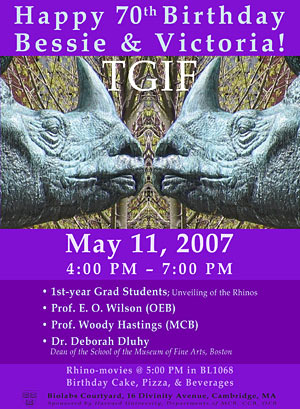
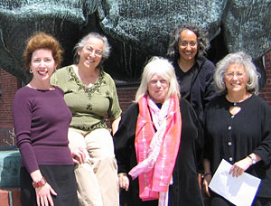

News Archives : 2007 : Rhinos Bessie and Victoria Celebrate 70 Years
by Kristen Uekermann
May 4, 2007
| 
 |
|
Celebrations will be held in the Bio Labs courtyard beginning at 4:00 PM on Friday, May 11th with special guests in attendance. Pizza, birthday cake and beverages will be served. This event takes place Rain or Shine at the Bio Labs Lecture Hall.
The world-famous rhinos, Victoria and Elizabeth, who flank the main doors of the Bio Labs building, were unveiled on May 12, 1937 by their award-winning sculptress Katherine Ward Lane Weems. Weems used a female Rhinoceros unicornis at the Bronx Zoo as a living model for both sculptures, each modeled separately, scaled to match the largest recorded specimen. Lane then named her studies after queens of England.
After five years of crafting the bronze sculptures, the day for their unveiling arrived. As the curtain draped over each of the three-ton rhinos was lifted, it was noted, to the chagrin of event organizers, that the students had added their own "artistic touch" by placing bedpans under each rhino. Thus began a long history of affectionate pranks on the much-loved rhinos by students.
Special guests and activities for the celebration include:
The event is free and is open to all rhino-lovers, especially those in the life sciences community. It is sponsored by Harvard University Departments of MCB, CCB and OEB.
Related Books:
by Celia Shneider, McMahon Lab
Soon after I began working at MCB in 2005, Caroline Morrison (Administration) mentioned that she had some interesting background material about the history of MCB, and the artist, Katharine Lane Weems, who created our beloved rhinoceroses and the artwork on the Bio Labs doors and building. She handed me a faded copy of a chapter from L.T. Ambler's book, "Katherine Lane Weems," telling the story of the sculptress. Intrigued, I located the book in the Fine Arts Library, and became more familiar with the woman's work and the history of the Bio Labs' artwork. She was a sculpture student at the School of the Museum of Fine Arts from 1918 to 1922. Amazingly enough, one of her sculptures happened to be of a racehorse named "Seaton Pippin," created for, I realized, my sister-in-law's grandparents' prizewinning horse in 1933 (See Ambler book, pg 43)! How life is an intricate, invisible web of connections!
Several months later, Cheryl Hutt (Financial Officer, MCB) stopped by my office to say that she had just gone to the Museum of Fine Arts to see their fabulous fashion show, and did I know they had a rhinoceros in front of their school, too? Did I know if there was a connection between the two, and did I know who the artist was? Having read the book, I knew that all the rhinos were from the same cast by Weems, and it just so happened that the Ambler book was in my office (thank you Harvard, for letting us take out books 6 months at time). I whipped out the Ambler book, and showed it to Cheryl, who was immediately bitten by the K.L. Weems bug, as I had been. As we looked through the chapter on the Bio Labs, we found a picture showing the original unveiling of the Harvard rhinos, on May 12, 1937 (Ambler, pg. 50). A light bulb went off in my head and I thought -- why don't we have a 70th year commemoration of Bessie and Victoria's arrival? And so the idea for the birthday party was conceived... Henceforth, a small, and very enthusiastic committee was formed [Celia Shneider, Cheryl Hutt, Corinna Rohse (Gradworld), Stephanie Levinson (Dowling lab), Barbara Cerva (Undergraduate Biology)] and the grand TGIF of May 11, 2007 came into being.